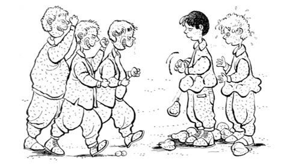

AYVAYI YEDİK
Zaman zaman nefsimize uyup, bağ bahçe talan ettiğimizi okudunuz. İzmir’deyken onca cenge katılan bu yiğitlerin “Bursa’da daha bir tane kahramanlıklarını okumadık” diye aklından geçirenleriniz olabilir.
Bursa, Osmanlı’nın ilk başkentidir. Bir ay kadar kuşatma sonrasında Osman Gazi’nin vefat ettiği gece Orhan Gazi tarafından teslim alınmış. Şimdiki Tophane semtine çıkarken o zamandan kalan surlardan bazılarını görmek mümkün. Bazı taşlarının heybetini görenler, “Yav, bu şehri alanlara helal olsun!” derler. O surlara tırmanmak her askerin yapacağı iş değildir. Serdengeçti denen, en gözü kara yiğitlerin ön safta, günler geceler boyunca cenk etmeleriyle alındı Bursa.
Konu surlar ve serdengeçtilik olunca şimdilerde kim gelir akla? Değil mi ya! Yiğitler yiğidi, cengâverlerin önde gideni, gölgesi heybetli civanım Şerif’im!
Bize geldikleri bir gün... Hava ne çok sıcak ne serin, biraz pus varsa da o zamanlar bizim anlayabileceğimiz bir şey değil. “Aile büyükleri baktılar evin altı üstüne geldi, bizi yarı tatlılık, yarı katılıkla, iki yiğide yapılmayacak muameleyle sokağa attılar” demek de tam doğru değil tabii, sonuçta bu leke ömür boyu yapışır adamın paçasına. Velhasıl, sokağa çıkmak için ikna edildik.
“Yav, Ahmet’im madem sokaktayız, bir duvar bulup tırmansak mı?” manasında bir arayış Şerif’imin gözlerinde peyda oldu. Âdettendir; gelen misafir değerli bir yiğitse mümkün olduğunca toptu tüfekti bir şeyden kaçınmadan ağırlanır.
Şeriflerin muhiti neredeyse ormanın yanı başında, her taraf bağ bahçe. Az buçuk insancıl bir maymunla helal süt emmiş bir kız bulsalar, Şerif’im yarı Tarzan sayılır orada. Bizimse mezarlıklar ve yapılmakta olan inşaatlar oyun alanlarımız.
Evden atılmış olmanın verdiği sıkkınlık var. Aklıma Lazların ayva bahçesi geldi. Şerif de meyve talanına bayılır, artık biliyorsunuz. Karadeniz’den göç eden bazı konu komşu da bizim ev civarlarında otururdu. Çocukları biz yaşlarda ve bizden az büyük, bir bahçede altı yedi kardeş, iki aile, üç beş köpek, ayva ağaçları ve ufak tefek nebat yaşayıp gidiyorlar. Her an evde ya da bahçede birileri olduğundan ayva çalmak için nokta harekât ve vur kaç taktiği, tek seçenek.
Bahçe duvarı var, taşla örülmüş. Ayakla, elle tırmanarak anca çıkılacak durumda olduğundan heveslisi pek olmazdı. Yaklaşık üç metreye yakın yükseklikteki duvarı geçmeden mümkün değil bir ayva koparamazdın. Bilen bilir; ayva denen meyve, erik, armut gibi taşla kolayca dalından düşmez. Zaten taşla düşüp berelenen meyveyi de yemek bize yakışmaz.
Duvarın dibine geldik. Şerif önce duvardan dışarı uzanan ayva dolu dallara baktı, sonra da bana. Can dostuna duyduğu muhabbetten olsa gerek duvarın yüksekliğinden pek dem vurup sitem etmedi Şerif’im, ama belli ki canı sıkkın, dalgın düşünceli, mümkün olsa bir eli çenesinde uzaklara dalıp gidecek. “Bu duvara çıkarken düşsek, bizi anamız babamız tanıyamaz” demediyse efeliğindendir.
“Daha önce daldınız mı bu bahçeye?” dedi. Belli ki yiğidim bahçenin talan edilebilirliğini merak ediyor. Sonraki sorusunu siz sormadan ben yazayım: “Ayvalar nasıl?”
“Bir iki daldık Şerif’im ama yanımızda mahalleden Sırık Osman da vardı” dedim, “onun boynuna çıkıp duvara tırmanıyorduk!” Duvarın yüksekliğini tarttı, ölçtü, biçti. Taşların arasına elimizi ayağımızı koyaraktan tırmanabileceğimiz konusunda teknik bir anlaşmaya vardık. Bu tip tırmanışlarda önemli olan, oynak bir taşın olmamasıdır. Kafayı gözü yardığınız yetmez, bir de evde devamı gelir. Gerçi bu sefer sokağa neredeyse atılmıştık.
Oflaya puflaya üç beş deneme sonrası duvarın tepesine elimiz erdi. “Şerif’im, cam kırıklarına dikkat et” dememe kalmadı, civanım bir iki sıyrık aldı parmaklarından. O zamanlar duvar örme işi bitince, cam kırıkları çimentoyla karıştırılıp duvarın üst yüzüne sıvanırdı ki caydırıcı olsun. Surlara tırmanan ilk serdengeçtilerde olduğu gibi Şerif’im de birkaç kesikten nasibini aldı. Tırmanmadan önce ayvaları nasıl anlattıysam, yiğidim sıyrıklara aldırmadı bile. Gazilik, zaten ikimizin de kaderinde var.
Demiştim; nokta atışı ve vur kaç yapılır. Çoluğu çocuğu, iti köpeği bol, sahipli bahçe... İstilaya gelmişiz; daha tırmanırken dallardan gözüne kestirdiğin üç beş besili ayvayı aldığın gibi kazağın içine atmak ve en sessiz şekilde kaçmak şarttır. Dalar dalmaz dört beş cevval ayvayı koparıp kazağa attık ki köpekler başladı havlamaya. Ev zaten tedirgin. Çocuklar, “Aha ayva çalıyorlar!” nidalarıyla evden fırladılar. Malum, mesele, namus meselesi olur artık. Biz nasıl fethe geldiysek eloğlu da savunacak toprağını.
Buraya kadar sorun yok, zaten biz alacağımızı almışız. Yapacağımız şey, yakalanıp sopa yemeden ayvalarla duvardan atlamak; yiğitlere yakışmaz belki ama mümkünse kaçmak. Taşlara yalan yanlış bir iki tutunup âdeta uçarcasına surların dibine süzüldük ki duvarın üzerinden taşlar uçuşmaya başladı. Ama çocuklar bizi tutturamayacaklarını anlayınca başladılar sövmeye. Kazak içinde ayvalar, topukları popomuza vuraraktan iki cengâvere yakışır bir telaş hâlinde tüm ağır başlılığımızla uzaklaşırken kulaklarımıza küfürler ulaştı hâliyle.
Bu andan itibaren anlatacaklarım, Şerif civanı şahsen tanımamış kimseye inandırıcı gelmedi bugüne kadar. Ama anlatılan bazı şeyleri menkıbeden çıkarıp gerçek yapan, bazı yiğitleri de cengâver yapan bu tip hadiselerdir. Ayva talanından kaçtığımız o güne kadar yiğidim sayesinde kavgaya karışıp sopa attığımız-yediğimiz çok olmuştur da hepsinin tutulur bir tarafı vardır. Bazısını kavganın içine düşmeden de hissederdim. Bu seferki bambaşkaydı. Küfürler kulağımıza geldi gelmesine de biz durum gereği kaçmak zorundaydık. Ya da en azından siz öyle düşünüyorsunuz. Civanımın kulağına küfürlerin gelmesiyle zınk deyip durması bir oldu. O sırada çocukların üçü de duvardan inmekteler ki biri hepimizden yaşça daha büyük. “Duydun mu ana avrat gittiler?” dedi Şerif. “Abi, adamları soyup talan etmişiz, olur o kadar” manasında bir sessizlikle koşmaktayım, “Olsun Şerif’im, tenhada daha sonra kıstırırız” dememe kalmadı, olan oldu! Hırsızlığa mı yanayım, yediğimiz küfürlere mi, ya da en kötüsü Şerif’in bunu duyup kızmasına mı! El mahkûm, ben de durdum.
Çocuklar da biz durunca şaşkın bakışlarla mecburen durdular. Şerif’imin kazağının içinde ayvalar tüm heybetiyle belli ama “Nasıl söversiniz!” nidasıyla höykürmeye başladı. Çocuklar hâliyle şaşkın. Yavuz hırsız denen arkadaş bizden önce meşhur oldu mu şimdi hatırlamıyorum. Neyse konu dağılmasın, Şerif’im daldı çocuklara.
Ayvadan çok, yiyeceğimiz dayak varmış. O iri kardeş olmasa rahat süpürürdük onları da... Temizinden bir arbede yaşandı. İnsan hem küfür hem sopa yerken daha çok kanına dokunduğundan, başlangıçtakine göre daha bir canı gönülden dalıyor harbin içine. Biz kaşındıkça çocuklar daha güzel kaşıyor hâliyle.
Küfür kanımıza nasıl dokunduysa artık, ayvalardan birkaçını düşürme pahasına iyi sayılabilecek orta hasarlı bir kavga yaptık. Gerçi çocuklar da şaşkın; bugüne kadar ayva çalıp da kaçanlardan küfürle duran ilk ekip bizdik sanırım. Arbede sırasında üç beş amca bizi ayırmaya çalışırken Şerif’in sesi mahalleyi alıyordu hâlâ. Amcalar da, “Oğlum, ayıp değil mi küfür edip duruyorsun!” diye civanımı teskin ediyorlardı.
Tamam, belki ayvaların tamamı bize kalmadı, biraz hasar da vardı ama en azından bir daha kimseye sövemezler artık diye ne Şerif beni, ne de ben onu teselli etmedik. Çünkü yiğidimin bu ve benzeri hassasiyetleri yüzünden yediğimiz kaçıncı sopaydı.
“Yav, ayvayı çalmışız, tutulacak yanımız yok, bir de durup dayak yedik!” dedim. “Abi, sövmesinler! Sövmesinler arkamızdan, dururum ben!” dedi civanım. Ayvaları dişlerken ister istemez biraz canımız yanmadı değil ama değdi.
Şeriflerin kurbanlık koçu Karagöz hâlâ aklınızda biliyorum ama istedim ki, bu cenk şehrinde bir serdengeçtiyi tarih bir daha yazsın. Hadi kurbana... Kurbanlıkların şahı Karagöz’ün canı rahmet istedi.